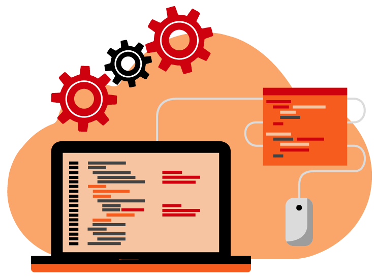
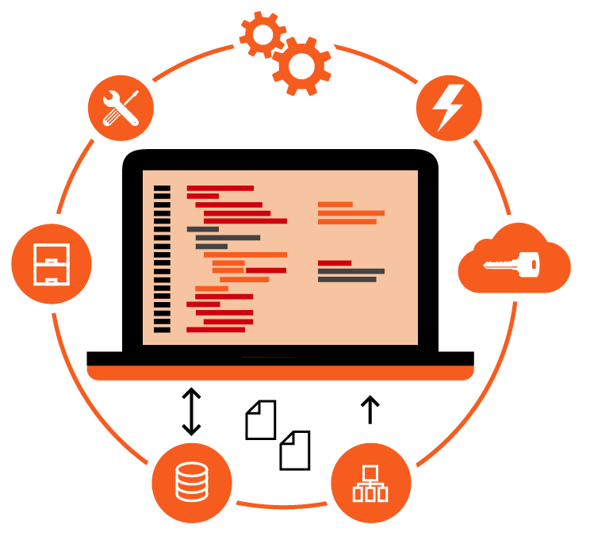
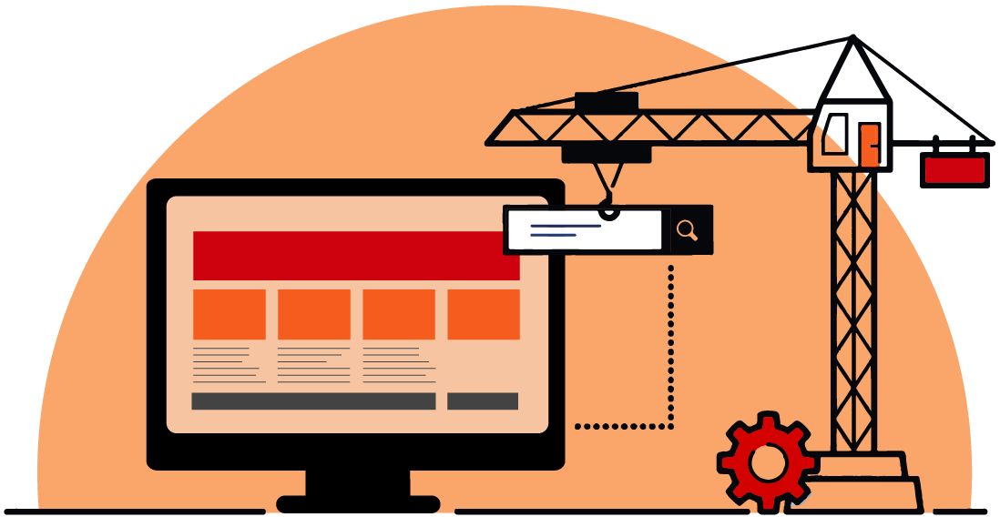

 Continuous integration is a practice of the software development cycle which encourages software developers to integrate their codes into the main branch of a shared repository as often as often. Instead of coding and testing out new features in isolation and integrating them at the end of an individual development cycle, newly written codes is integrated with the shared repository by each software developer many times throughout the day if needed or possible. Our Devops experts, using their immense experience in Dockers consulting services, we provide an unmatched continuous integration service.
Continuous improvement
DevOps is the fastest way to get your infrastructure in a competitive, consistent, highly scalable format which will be a formidable product for years to come. The optimum mix of Agile and DevOps practices means that we deliver on time, as we value the given time frame and provide a very accurate time estimate. Our DevOps integration process starts with an assessment of existing Services and strategy to come up with a list of areas for improvement and the tools, required to successfully inject the DevOps Strategy.
Continuous innovation
The objective of this technique of continuous integration is to make integration an easy, repeatable and periodic process which is part of the everyday development and becomes a part of the organization’s work culture and workflow. in order to reduce integration costs and respond to any debugging or quality as early as possible. This technique is all about making sure that the system is scalable, robust, fully automated, and fast while fostering a software development culture which encourages and relies upon frequent iterations and updates. Our Devops automation services make sure that no stone is unturned during the continuous integration service.
Advantages of Continuous Integration
Continuous delivery services
 Continuous delivery is the operational extension of continuous integration. This technique focuses on automating the software delivery process so that operations team can easily and assuredly deploy their updated code to production at any time. By making sure that the codebase is always in a real-time deployable standby status, releasing and adding software updates becomes a low-key event without any operational hiccups. Operational Teams can be assured in the fact that they can release updates and added services whenever they need to without the traditional cross-department complex coordination or the last minute testing rituals. As with the technique of continuous integration, the technique of continuous delivery is a work practice that requires a right mix of technical wizardry and organizational managerial improvements to be effective. Our DevOps team have considerable experience in an unmatched Continuous delivery services. On the technical and software development side, the continuous software development and delivery process lean heavily on deployment processes to automate the testing, quality analysis and deployment processes.
The deployment process is an automated system so that it can run a series of highly rigorous tests against a build as opposed to the traditional method series of sequential stages. This technique picks up the baton from where continuous integration technique drops off, so a reliable continuous integration setup is a prerequisite to implementing continuous delivery. Our Devops services make sure that your product is always above and on par with the competition.
Delivering excellence
At the end of each designated stage, if the build fails the tests or fails to reach the quality standards, which alerts the team, or in the case of passing the tests, which results in automatic promotion to the next stage. As the build progresses through the software development process, the later stages deploy the builds to environments that reproduces the production environment to the teeth. This way the builds, the deployment process, and the reproduced production environment can be tested in tandem.
This process pipeline ends with a build that can be deployed to the production at any given time with a single step. The organizational edge with the technique of continuous delivery is that encourages and manifests a prioritization of "deployability" of the service and product as an important aspect of the software development process. This impacts on how the way new updates and features are built and added to the rest of the codebase. Planning and preparations must be put into the design and the structure of the code so that the features can be effectively deployed to production at any time, with the utmost ease. A number of helpful and complementary techniques have emerged to assist the entire process in this habitat. Our Devops consulting services are customized for every individual client, so as to get the client gets the best devops solutions.
Delivering advantage
Continuous delivery is gaining traction due to its ability to automate the steps between code testing and quality and the deployment into the code repository and eases the decision on to whether release the quality checked codes into the existing production infrastructure. While the steps associated with the quality and debugging of the code are automated, but the final business decision of release is the hands of the organization for maximum leverage. Our dedicated Devops team make sure that your organization has the best Devops platform.
Advantages of Continuous delivery
Continuous Deployment services
 Continuous deployment is an extension and the conclusion of the continuous delivery process, which automatically deploys each update and service that passes the quality and debugging metrics. Instead of the traditional way waiting for an individual from the operations team to make the business decision to when to deploy the updates and services into the existing production, a continuous and periodic deployment system which deploys everything that has successfully passed the development and deployment process.
Deploying new features and updates into the existing product automatically pushes the features and the update to the end users as quickly as possible, this technique encourages the developers to code and create smaller changes within the limited scope when compared with whole picture, and also helps to avoid confusion and collision of ideas and concepts over what and when is deployed into the existing production. The fully automated process within our Devops automation services, the deployment cycle can and often is a source of worry for organizations due to the increased influence of automation systems and what and how the updates and features get released. This trade-off of power and influence offered by the automated deployments is sometimes thought as to be too tricky and unforeseen for the payoff they provide. Our Devops team make sure that the deployment process is as smooth as possible.
Continuous performance
Some organizations and companies efficiently leverage the advantage of automated release as a sure shot method of ensuring that best practices and cultures are always followed by the teeth and to expand the testing and quality analysis process into the limited production habitat. Without the final manual verification by the testing and quality assurance departments before deploying an update or feature, software developers and coders must take responsibility for ensuring their code quality as it is well-designed.
Our Devops IT support team makes sure that the integrity of the code and the overall feature and functionality of your product is not lost in the deployment process. This leaves the business decision of what and when to deploy the newly written code into the main repository and what and when to release the updates and features to the existing production.
Continuous relevance
Continuous deployment also allows organizations the luxury of feedback very early when compared with the traditional method of doing things. Features and updates can be immediately be made available to the end user and the end user can report with defects and any possible corrections. Getting a fast and valuable feedback that an update or feature isn't helpful or not working as intended lets the organization shift resources to address the issue in real time for maximum impact. Hire Devops engineers to get the added advantage of the entire CI/CD/CD process.
Advantages of Continuous Deployment
Qualities of Our DevOps Engineers
 Coding
Coding
Usually, a DevOps have a considerable amount of experience when it comes to coding, this experience is valuable when it comes to complex processes such as continuous integration, continuous delivery and continuous deployment. A DevOps engineer also possesses the viewpoint of the operations team.
A DevOps engineer is known for his or her ability to bring together a bunch of different talents from backgrounds of different specializations. A DevOps engineer also has to navigate through the maze of expertise of different teams.
Another team where most DevOps experts come from the testing team, an ideal DevOps engineer is a combination of Developing and testing. This skill is particularly useful when it comes to complex processes such as continuous integration, continuous delivery and continuous deployment.
Our DevOps experts make it a priority to have a security as an important aspect of their operations. Due to the speedy process of continuous integration, continuous delivery and continuous deployment, our DevOps service providers take security as a high priority.
A DevOps expert needs to be up to date with all the tools, DevOps solutions heavily depend upon automation tools. Our DevOps experts are up to date all the new tools which make us one of the well known DevOps companies.
A DevOps expert has to have soft skills, this will only help him or her to be a proximity leader of many different teams. A DevOps service provider needs to combine all the skill to be on top of the game.
A Case Study on DevOps: The Transition
Storin DevOps consultants works closely with the customer development and deployment team and understand their existing process, prepared DevOps adoption plan, worked with the team to understand the advantages of the transition, given proper training which needed, helped them in moving to the DevOps culture.
Read More...